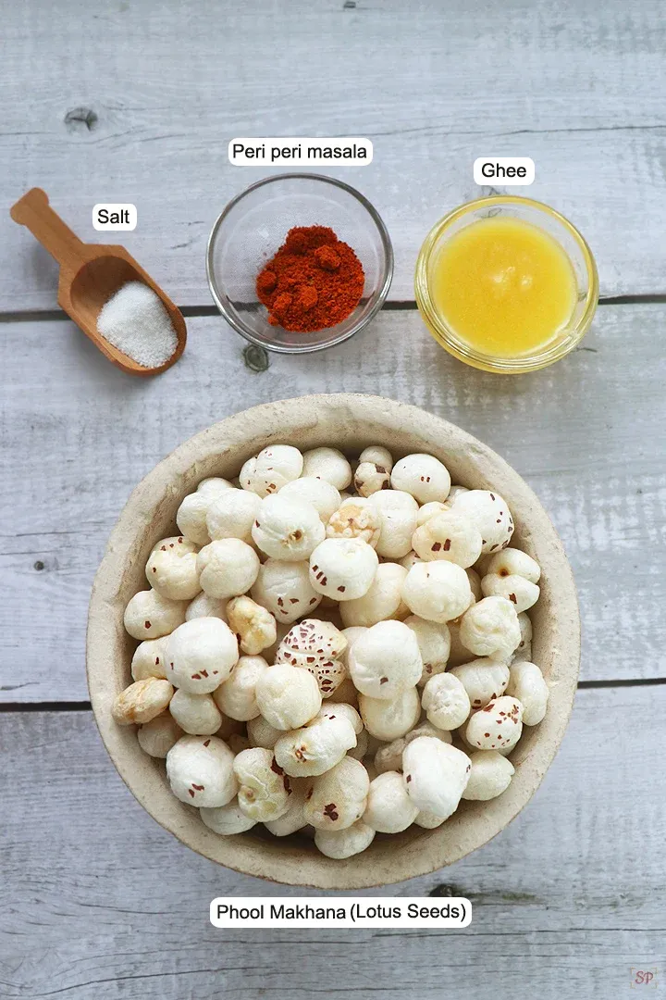
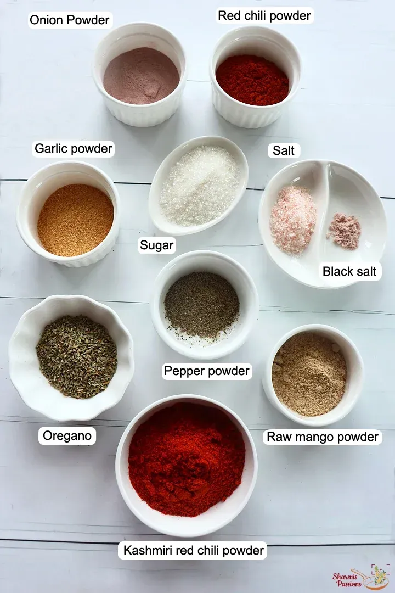
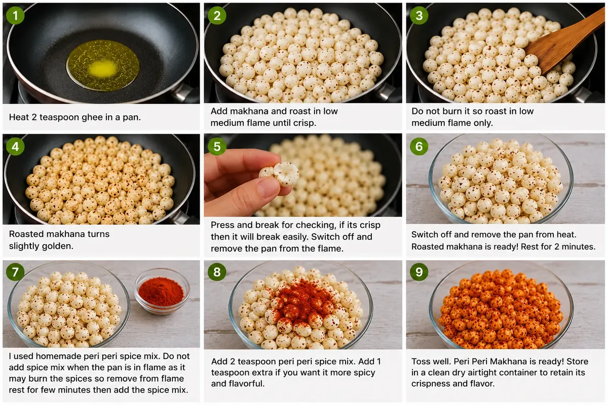

Ingredients

- 1 and ½ cups makhana foxnuts
- 2 teaspoon ghee
- 2 teaspoon peri peri mix
- salt to taste
Peri Peri Masala Ingredients

- Kashmiri chili powder - added for a bright color and mild heat.
- Red chili powder - for adding spice to the blend mix.
- Garlic powder - adds a deep garlicy flavor.
- Onion powder - adds a mild sweet and earthy taste.
- Amchur powder - adds tanginess to the spice mix.
- Salt - to taste
- Black salt - adds tanginess and taste.
- Sugar - gives a mild sweetness to the blend mix.
- Pepper powder - gives mild heat and flavor.
- Oregano - adds aroma, flavor and taste.
For making peri peri Masala at home , mix all mentioned ingredients.
Instructions
- Heat 2 teaspoon ghee in a pan.
- Heat ghee in a pan - add makhana and roast in low medium flame until crisp.
- Do not burn it so roast in low medium flame only.
- Roasted makhana turns slightly golden.
- Press and break for checking, if its crisp then it will break easily.Switch off and take the pan out from the flame.
- Switch off and remove the pan from heat. Roasted makhana is ready! Rest for 2 minutes.
- I used homemade peri peri spice mix. Do not add spice mix when the pan is in flame as it may burn the spices so remove from flame rest for few minutes then add the spice mix.
- Add 2 teaspoon peri peri spice mix. Add 1 teaspoon extra if you want it more spicy and flavorful.
- Toss well. Peri Peri Makhana is ready! Store in a clean dry airtight container to retain its crispness and flavor.
